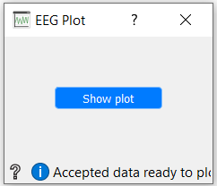

EEG Plot
Orange widget that plots epochs from an eeg data file.
Inputs
Use

Press the Show plot button to display the graph.
Example


More information about plot Raw here.
More information about plot Evoked here.
More information about plot Epochs here.